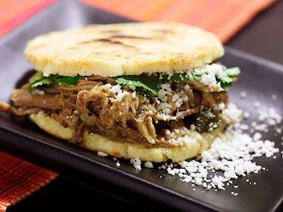

Arepa

Description
A flat round cornmeal cake popular in Central and South America, particularly Colombia and Venezuela. Arepas resemble English muffins and are made with various toppings or fillings, including cheese, butter, or meat. The preparation varies widely.
Ingredients
- 2 ½ cups lukewarm water
- 1 teaspoon salt
- 2 cups pre-cooked white cornmeal (such as P.A.N.®)
- ¼ cup vegetable oil, or as needed
Steps
- Stir water and salt together in a medium bowl; gradually stir in cornmeal with your fingers until the mixture forms a soft, moist, malleable dough.
- Form dough into eight 2-inch diameter balls; pat each ball to flatten into a 3/8-inch-thick arepa patty.
- Heat oil in a large skillet over medium heat; fry arepas in batches until golden brown, about 4 to 5 minutes per side. Transfer cooked arepas to a paper towel-lined plate to drain until cool enough to handle.
- Slice halfway through each arepa horizontally with a thin serrated knife to form a pita-like pocket.